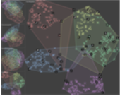

Comparing Visual-Interactive Labeling with Active Learning: An Experimental Study

Authors. Jürgen Bernard, Marco Hutter, Matthias Zeppelzauer, Dieter Fellner, Michael Sedlmair
Venue. TVCG (2017)
Abstract. Labeling data instances is an important task in machine learning and visual analytics. Both fields provide a broad set of labeling strategies, whereby machine learning (and in particular active learning) follows a rather model-centered approach and visual analytics employs rather user-centered approaches (visual-interactive labeling). Both approaches have individual strengths and weaknesses. In this work, we conduct an experiment with three parts to assess and compare the performance of these different labeling strategies. In our study, we (1) identify different visual labeling strategies for user-centered labeling, (2) investigate strengths and weaknesses of labeling strategies for different labeling tasks and task complexities, and (3) shed light on the effect of using different visual encodings to guide the visual-interactive labeling process. We further compare labeling of single versus multiple instances at a time, and quantify the impact on efficiency. We systematically compare the performance of visual interactive labeling with that of active learning. Our main findings are that visual-interactive labeling can outperform active learning, given the condition that dimension reduction separates well the class distributions. Moreover, using dimension reduction in combination with additional visual encodings that expose the internal state of the learning model turns out to improve the performance of visual-interactive labeling.